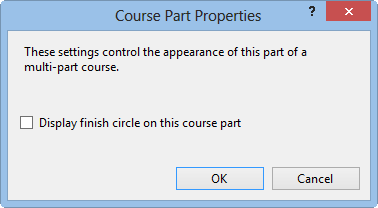

Course Part Properties
When a single part of a multi-part course is displayed, you can clicked on the Properties... button in the course part bar to display properties for that part.

The following settings can be changed:
- Display finish circle on this part. If this setting is checked, then the finish circle is displayed on this part, so that competitors who drop out or are injured can find the finish. This setting is unavailable on the last part of the course.
See also: using map exchanges.